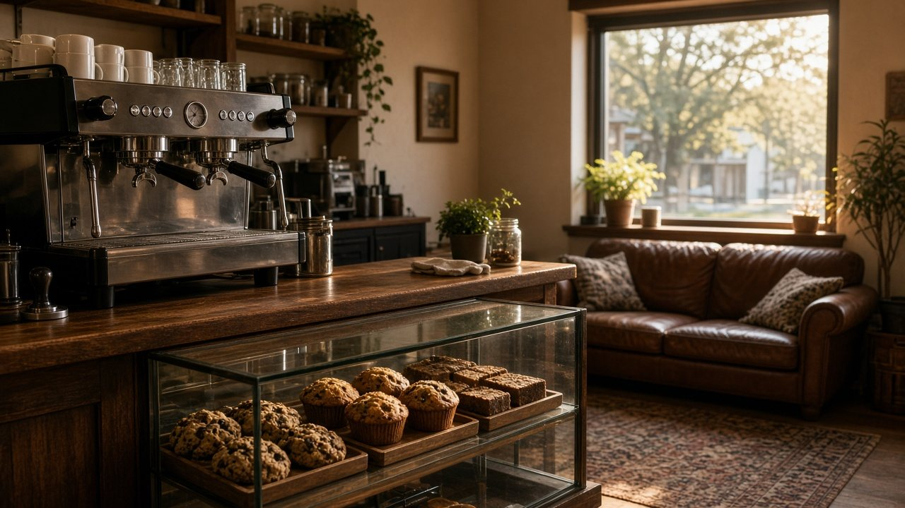

A cozy small-town coffee stop with a drive-through, big breakfast burritos and friendly baristas.

Sample photoGrab it at the drive-through, or stay a while on the leather couches.
Espresso drinks, coffee, chai and Zip Fizz drinks.
Cookies, breads, bars and muffins, baked right here.
Breakfast burritos, a bacon egg & cheese croissant and bagels. The bacon breakfast burrito is the one people talk about.
Reviewers note the shop uses Doma coffee.
Owned by Jeremy and Christa Gray. A community hangout, right next to a gym.
“One of the best hidden gems in the valley. I love this place. The breakfast burrito is fantastic and they use Doma coffee (which is the best coffee EVER)”GOOGLE · FEB 2026
“Ok what a cute place! I asked the barista Emmerie to surprise me with a zip fizz and it tasted just like gummy candy”RESTAURANTJI · JUL 2026
“I love coming here! The workers are always friendly and the environment clean and inviting! Coffee and food is delish and affordable! My go to hangout when I want to spend quality time with other moms!”GOOGLE · JUL 2025
| Monday | 6 AM–5 PM |
| Tuesday | 6 AM–5 PM |
| Wednesday (short day) | 6 AM–1 PM |
| Thursday | 6 AM–5 PM |
| Friday | 6 AM–5 PM |
| Saturday | 7 AM–5 PM |
| Sunday | 7 AM–5 PM |
4707 N Harvard Rd, Unit 1
Otis Orchards, WA 99027
Email jackandthebeanshop@gmail.com
Text (509) 241-3242
Facebook: jackandthebeanshop